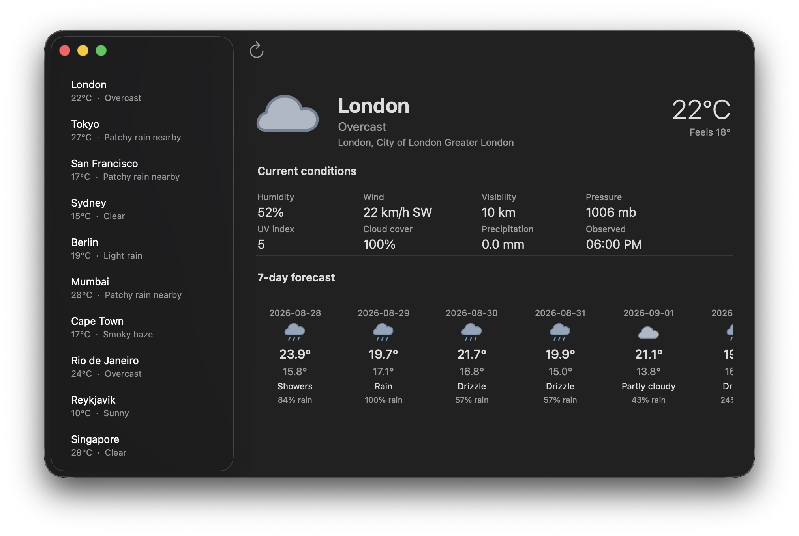

Native by default
AppKit and UIKit controls do the real work: selection, keyboard behavior, accessibility, focus, and platform metrics.
Native Apple UI, live in Lua
Build polished macOS and iOS interfaces with declarative Lua, real AppKit/UIKit controls, and no compile cycle between edits.
⌘ Edit. Run. See it immediately.
A real native window, rendered from Lua
The short version
SwiftUI is elegant. The compile-and-preview loop around it can be anything but. lua-objc keeps the expressive part and removes the ceremony between an edit and the thing you are building.
AppKit and UIKit controls do the real work: selection, keyboard behavior, accessibility, focus, and platform metrics.
Edit a Lua controller or etlua view, run it directly, and get a fresh native window without an Xcode build step.
Headless tests, screenshots, and native layout dumps make behavior and geometry inspectable by people and agents.
A small proof
One app. A real network request, native loading state, a location sidebar, and a seven-day forecast that scrolls when it needs to.

Stable structure belongs in etlua. State, network boundaries, and actions stay in Lua. The result is simple to read, simple to test, and still feels at home on the platform.
Read the weather walkthroughStart with a folder
Keep the shape familiar: a model for data, a controller for actions, and views for declarative structure. The framework instantiates the controller returned by init.lua and calls its createWindow() method. Reusable view components return view trees.
The workflow is familiar: a controller prepares model data and passes it to a template. Here, Controller.lua renders views/*.etlua into real AppKit/UIKit controls. Partials, layouts, and reusable Lua view components keep presentation organized.
The key difference is lifetime. Controllers and native widgets stay alive across clicks, typing, and asynchronous results. Native callbacks invoke actions, and controllers explicitly update the views. Model changes do not yet trigger automatic reconciliation.
Use Laravel as a guide for separating responsibilities: models own queries and mutations, controllers coordinate actions, and views own presentation. This is an architectural comparison; the models are ordinary Lua code, with no Eloquent-style ORM implied.
Read the Laravel comparison<% if #city.forecast > 0 then -%>
<Divider />
<Label text="7-day forecast"
size="14"
weight="semibold"
/>
<ScrollView contentWidth="772"
contentHeight="188"
fixedHeight="200"
fillWidth="true"
horizontal="true"
>
<HStack spacing="12"
alignment="top"
fixedWidth="772"
>
<% for _, day in ipairs(city.forecast) do -%>
<VStack spacing="4"
alignment="center"
fixedWidth="100"
>
<Label text="<%= day.date %>"
size="11"
color="secondary"
/>
<Image src="<%= day.icon %>"
fixedWidth="28"
fixedHeight="28"
label="<%= day.desc %>"
/>
<Label text="<%= day.tempMax or "--" %>°"
size="16"
weight="medium"
/>
<Label text="<%= day.precipProbability or "--" %>% rain"
size="10"
color="secondary"
/>
</VStack>
<% end -%>
</HStack>
</ScrollView>
<% end -%><VStack flexGrow="1"
padding="24"
spacing="12"
alignment="leading"
>
<Label text="Hello from Lua"
size="24"
weight="bold"
/>
<Label text="A SwiftUI-like API backed by native AppKit controls."
size="14"
/>
<SystemImage name="swift"
size="64"
label="Swift"
/>
</VStack>local ns = require("AppKit"
)
local xml = require("ui.xml"
)
function Controller:createWindow()
local cfg = xml.renderFile(VIEWS .. "Window.etlua"
)
return ns.Window(cfg)
endOpen source, Apple-shaped
Contributors are very welcome. Bring a widget, an example, a test, a design idea, or simply a sharp question.